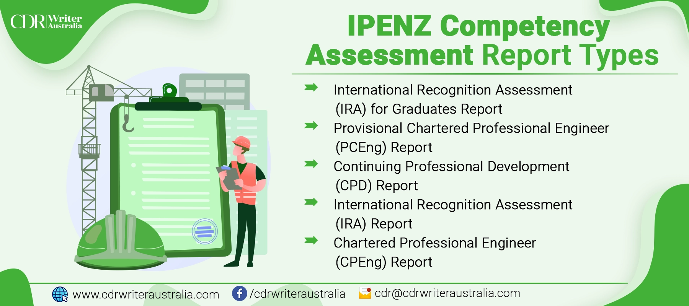

IPENZ Competence Assessment for Skilled Migration New Zealand
The IPENZ (Institution of Professional Engineers New Zealand) Skilled Migration Assessment is a process that evaluates the qualifications and experience of engineers who wish to migrate to New Zealand under the Skilled Migrant Category of the country's immigration policy. The assessment is conducted by IPENZ, which is a professional body for engineers in New Zealand.
The Skilled Migration Assessment is designed to ensure that the skills and experience of the engineers meet the standards expected in New Zealand. It involves a thorough evaluation of the engineer's academic qualifications, work experience, and other relevant factors such as their English language proficiency. To move to New Zealand, individuals are required to provide a KA02 report for skills assessment. This report is evaluated by the IPENZ to determine the proficiency level of candidates who lack proper engineering qualifications. If an engineer's qualifications and experience meet the requirements, IPENZ will issue a letter to the engineer confirming that they have met the standard required for Skilled Migrant Category residence in New Zealand. This letter can be submitted to the New Zealand immigration authorities as part of the visa application process.
What is the IPENZ Competence Assessment?
The IPENZ Competence Assessment is a process that evaluates the competence of overseas-trained engineers who wish to become registered as Chartered Professional Engineers (CPEng) in New Zealand. The assessment is conducted by IPENZ, which is a professional body for engineers in New Zealand. The purpose of the IPENZ Competence Assessment is to ensure that overseas-trained engineers meet the same standards of competence as those trained in New Zealand. The assessment involves a review of the engineer's academic qualifications, work experience, and other relevant factors such as their ability to communicate in English.
If an engineer's qualifications and experience meet the requirements, IPENZ will recommend the engineer for registration as a CPEng in New Zealand. This registration is a formal recognition of an engineer's competence and professional standing, and can be an important factor in securing employment in the New Zealand engineering sector.
It is important to note that the IPENZ Competence Assessment and the IPENZ New Zealand Skilled Migration Assessment are two different processes with different purposes.
Who needs the IPENZ Competence Assessment?
Overseas-trained engineers who wish to become registered as Chartered Professional Engineers (CPEng) in New Zealand need to go through the IPENZ Competence Assessment. The assessment is required to ensure that overseas-trained engineers meet the same standards of competence as those trained in New Zealand and are competent to practice engineering in New Zealand. The CPEng registration is a formal recognition of an engineer's competence and professional standing, and is highly valued in the New Zealand engineering sector. It demonstrates that an engineer has met the high standards set by IPENZ and is recognized as a competent and qualified engineering professional in New Zealand.
The assessment process involves a review of an engineer's academic qualifications, work experience, and other relevant factors such as their ability to communicate in English. The assessment is designed to be rigorous and may take several months to complete. You can contact us to get more information regarding this topic.
IPENZ Migration Skill Assessment Process (New Zealand skill assessment)
The assessment process varies depending on the applicant. However, the most common assessment process and criteria has the following steps:
Eligibility check
The first step in the assessment process is to check whether an engineer is eligible for the Skilled Migrant Category visa. This involves checking the engineer's age, health, character, and English language proficiency.
Initial assessment
Once the eligibility check is complete, the engineer can submit an application to IPENZ for an initial assessment. This involves providing details of their academic qualifications and work experience.
Outcome of initial assessment
Based on the information provided in the initial assessment, IPENZ will determine whether the engineer's qualifications and experience meet the standards expected in New Zealand. If the engineer meets the standard, IPENZ will issue a letter confirming that the engineer has met the requirements for Skilled Migrant Category residence in New Zealand. If the engineer does not meet the standard, IPENZ will provide feedback on the areas where the engineer needs to improve to meet the standard.
Full assessment
If the engineer receives a positive outcome from the initial assessment, they can proceed to the full assessment stage. This involves providing further details of their work experience, references, and other relevant documentation. IPENZ will also conduct a detailed review of the engineer's academic qualifications.
Outcome of full assessment
Based on the information provided in the full assessment, IPENZ will issue a final letter confirming whether the engineer meets the requirements for Skilled Migrant Category residence in New Zealand. If the engineer meets the requirements, the letter can be submitted to the New Zealand immigration authorities as part of the visa application process.
IPENZ Migration Skill Assessment Process for ICT and Non-ICT Professionals
The assessment process for ICT professionals for skilled migration involves several requirements and steps that an applicant must fulfill. To be eligible for a New Zealand skilled immigration visa, the applicant must be 55 years or younger and possess skills that are crucial for the country's economic growth. The visa allows the applicant to live, work, and study in New Zealand indefinitely, along with their spouse and children who are 24 years or younger. Currently, only those who scored 160 points or more on their visa application are considered eligible for this visa.
For non-ICT IT professionals or engineers, the 'Work Experience' section of the visa requires them to demonstrate their skills through the KA02 form, which is evaluated by IPENZ (now known as Engineering New Zealand). The IPENZ-KA02 form has five steps, including instructions and guidance, showcasing one's engineering skills and knowledge, identifying one's engineering discipline and field, providing evidence of the knowledge profile, and supplementary evidence.
To complete the KA02 form, the applicant needs to provide evidence that they match the Washington Accord's knowledge profile. This includes:
- Showing that they have the knowledge and skills necessary to solve complex engineering problems, as defined in Appendix One of the form.
- Provide a brief summary of key aspects of their knowledge of each element of the Knowledge Profile.
The applicant needs to focus on their personal contribution, writing in the first person and using 'I' or 'me' instead of 'we' or 'us.' They should also provide evidence of their application of knowledge by including 3-4 work episodes or study episodes where they applied their engineering knowledge to solve complex engineering problems. The applicant should include how they defined the scope of the problem, the solution or design they developed for it, and the analysis techniques they used. They should mention the engineering models they used and how they tested those models.
If the applicant has limited work experience after graduation, they can mention:
- The project work they did during their study period.
- Submit the actual calculations or analyses work they did or reports they prepared during the project.
- Submit certified copies of their academic transcripts.
- Summary of their work history, along with samples of specific engineering projects or activities to IPENZ.
Types of IPENZ Competence Assessment Reports
Individuals applying for the IPENZ's New Zealand Skills Assessment can choose to submit any one of the reports listed below. Applicants from universities accredited by the Washington Accord or following New Zealand university guidelines should submit the KA01 report to IPENZ. Those from unaffiliated universities should submit the KA02 report for skills assessment. IPENZ provides various competency assessment reports for engineers who wish to practice in New Zealand. Some of them are given below:
IRA for Graduates Report
The Initial Professional Development (IPD) report, also known as the IRA for Graduates report, is designed for recent engineering graduates or engineers with limited work experience. The report assesses whether the engineer has the necessary competencies to progress to the next stage of their professional development. It covers the engineer's academic qualifications, any relevant work experience, and their ability to communicate effectively in English.
PCEng Report
The Professional Competence Evaluation (PCEng) report assesses the professional competence of experienced engineers who are seeking registration as Chartered Professional Engineers (CPEng) in New Zealand. The report evaluates the engineer's knowledge, skills, and professional attributes, and is based on evidence of their work experience, academic qualifications, and other relevant factors. The PCEng report is designed to assess an engineer's competence to practice engineering at a senior level and to demonstrate their professional standing.
CPD Report
The Continuing Professional Development (CPD) report is designed to assess an engineer's ongoing professional development and to ensure that they are maintaining their professional competence. This report is required for engineers who have already been registered as CPEng and covers their ongoing professional development activities, such as attending conferences, undertaking training courses, and participating in professional networks.
IRA Report
The IPD Readiness Assessment (IRA) report assesses whether an engineer who has completed their Initial Professional Development (IPD) program has achieved the required level of competence to progress to the next stage of their professional development. The report evaluates the engineer's work experience, academic qualifications, and their ability to communicate effectively in English.
CPEng Report
The CPEng report assesses the professional competence of engineers who wish to become registered as Chartered Professional Engineers in New Zealand. This report is designed for engineers who have significant work experience and have demonstrated their professional competence at a senior level. The report evaluates the engineer's knowledge, skills, and professional attributes, and is based on evidence of their work experience, academic qualifications, and other relevant factors. The CPEng report is designed to assess an engineer's competence to practice engineering at a senior level and to demonstrate their professional standing.
How can we assist you in your IPENZ migration skill assessment?
An IPENZ Competence Assessment can be a complex and time-consuming process, and many engineers find it helpful to work with a service provider who specializes in this area. As a service provider we at CDR Writer Australia can offer a range of services to help you navigate the assessment process and increase your chances of success. We will review your qualifications and experience to ensure that they meet the requirements of the IPENZ Competence Assessment. We can also help you select the appropriate assessment report and assist with evidence gathering. We also provide guidance on the assessment process.
Table of Content
- What is the IPENZ Competence Assessment?
- Who needs the IPENZ Competence Assessment?
- IPENZ Migration Skill Assessment Process (New Zealand skill assessment)
- IPENZ Migration Skill Assessment Process for ICT and Non-ICT Professionals
- Types of IPENZ Competence Assessment Reports
- How can we assist you in your IPENZ migration skill assessment?